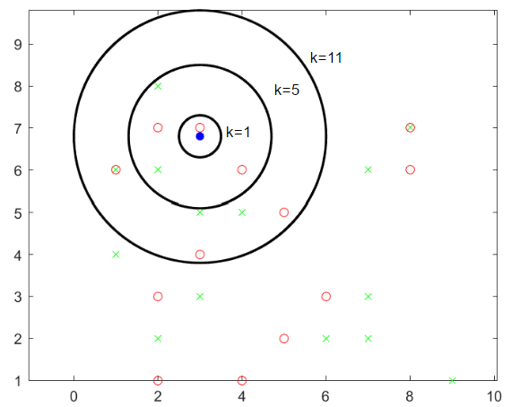
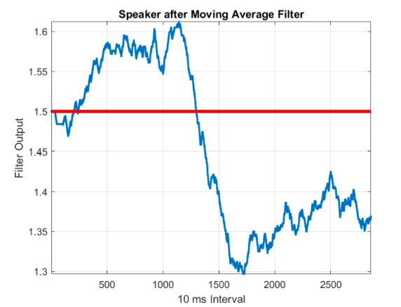
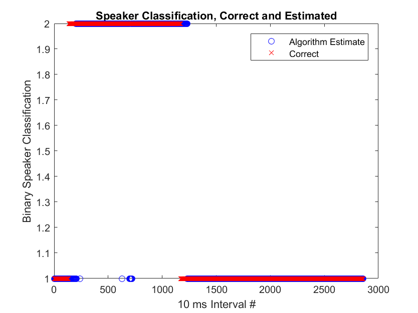
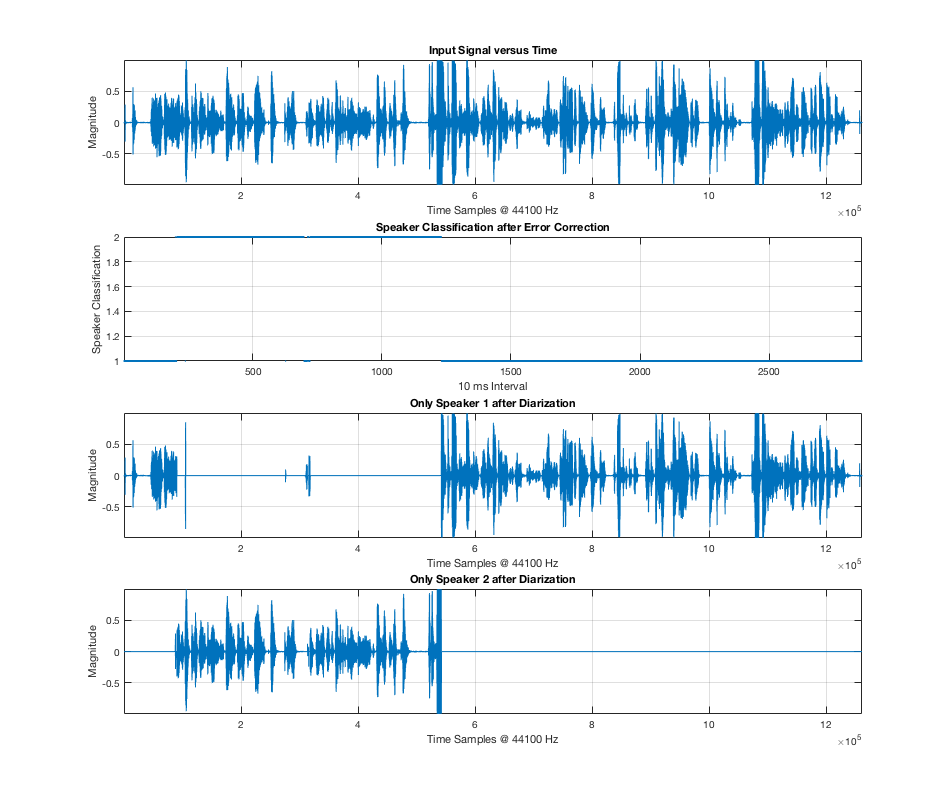

Introduction
We are Sam Rohrer and Bob Malinas. This website is dedicated to presenting our final EECS 351 project at the University of Michigan. Sam is a computer engineering major, and Bob an electrical engineering major.
The goal of our project is to take a sample of human speech and determine who is speaking as a function of time. This is known as speaker diarization. Applications for speaker diarization include separating a recording of a business meeting into segments, where each segment is a specific person giving their portion of the meeting. This is to make the lives of people who have to listen to these meetings easier.
We aim to do this using Mel Frequency Cepstrum Coefficients (MFCCs), which are abstract feature vectors that are calculated using digital methods that mimic the inherent audio filtering of the human ear. Just as humans can determine who is speaking given a speech recording, the belief is that a digital process will be able to do the same.
To accomplish our goal, we tested a variety of different speech features and classification methods. The method that produced the most accurate results was a classifier that used Mahalanobis distance and MFCCs. The specifics of these can be found in the section labeled Technical Work. An extensive overview of the output of each combination of features and classification methods can be viewed in the Experimental Results section.
The results of our Mahalanobis classifier are very favorable, yielding highly accurate speaker classification within a resolution of one second. This means that, in any given second, the algorithm could be predicting an incorrect speaker; however, it will be correct in the next second. For long speech inputs, one second resolution is realistically good enough. Additionally, the algorithm can even work with segments of speech that have a significant amount of breaths in them. Breaths proved impossible to classify, so handling them involved some error correction. The specific methods of error correction are discussed in the Experimental Results section.
Data
The primary source of data we used in our project was MFCC databases and speech recordings for a variety of speakers. For each speaker in the recordings, a database of MFCCs is required for the algorithm to work. To gather these databases, we recorded each person that speaks in the input speech signal separately, ran them through the MFCC algorithm, and placed their MFCCs in a matrix. An example of an MFCC vector is seen below to the right.
In the preliminary brainstorming stages of the project, we examined spectrograms of different speakers. An example of such a spectrogram is seen below to the left. Despite not using spectrograms in the final algorithm, they served as a stepping stone to MFCCs. They are similar to MFCCs in that they also represent short-time frequency data. Understanding spectrograms and the windowing involved in generating them was a key step to understanding MFCCs. In the spectrogram below to the left, one speaker is talking. We used a Hamming window for each short-time Fourier transform to avoid spectral leakage. Additional spectrograms can be seen in our progress report.
Finally, actual speech data can be seen in the center picture below. This speech data contains two speakers talking, and this was a speech sample that we used to test our algorithm during development. Again, the goal is to separate such speech signals into individual signals with only one speaker talking.

One Speaker Hamming Window Spectrogram
This is the spectrogram of a single speaker (~12 seconds long). It was computed with a Hamming window. We hypothesize the areas around 2 seconds and 11 seconds are fricative sounds based on their spread-spectrum frequency response. The areas around 8 seconds and 10 seconds are likely plosive sounds, as they are also spread spectrum but shorter in length.

Speech signal with two speakers
This is a speech signal to be inputted to the algorithm. The goal of the algorithm is to separate this speech signal into two separate signals, each with only one speaker talking.

MFC Coefficients Plot
This is the plot of a single sample (30 ms) computed with a Hamming window. The signal was band-limited at 300 Hz and 5000 Hz, based on the frequency spectrum of typical speech. It was then binned into 25 mel frequency bins. The plot shown here is the result of the MFCC computation, with the x-axis as dimension and the y-axis as magnitude.

Technical Work
In this section we present the technical work conducted throughout the semester while trying to create a speaker diarization system. There are two sections, audio features and speaker classification. In audio features we discuss envelopes and MFCCs. In speaker classification, we discuss the $K^{th}$ Nearest Neighbors method and the Mahalanobis distance method. Note that not all algorithms discussed were used in the final speaker diarization system.
Audio Features
Envelopes
Based on reference [1], we know that peaks in the spectral envelope of the time domain signal are known as formants. Additionally, different speakers have different formants and different sounds also have different formants. We first computed the envelope of the absolute value of the signal. In order to identify the formants, we compute the energy under the envelope at six different thresholds. The thresholds include less and less of the signal to help identify the formants. The features used were (in MATLAB) : $$ \begin{equation} e_1 = trapz(envelope(envelope > thd)), thd = \frac{1}{2} \end{equation} $$ $$ \begin{equation} e_2 = trapz(envelope(envelope > thd)), thd = \frac{5}{9} \end{equation}$$ $$ \begin{equation} e_3 = trapz(envelope(envelope > thd)), thd = \frac{5}{8} \end{equation}$$ $$ \begin{equation} e_4 = trapz(envelope(envelope > thd)), thd = \frac{2}{3} \end{equation}$$ $$ \begin{equation} e_5 = trapz(envelope(envelope > thd)), thd = \frac{3}{4} \end{equation}$$ $$ \begin{equation} e_6 = trapz(envelope(envelope > thd)), thd = \frac{7}{8} \end{equation}$$


Sample Envelope Coefficients
These are sample envelope coefficients from Bob (blue) and Sam (red), you can see the difference between the two that should allow succesful speaker classification.
Mel Frequency Cepstrum Coefficients (MFCCs)
Here we outline the steps required to generate MFCCs. MFCCs measure the short term log power spectrum of the signal. This is based on the Mel scale (see image below), which separates the frequency spectrum into non-linear bins which more closely mimic human hearing. The Mel scale achieves this with smaller bins (~100 Hz wide) at lower frequencies and larger bins (~1000 Hz wide) at higher frequencies.
1) Window the signal into 30 ms intervals with a 20 ms overlap, which means that there are 10 ms of new signal information for every window. Then a Hamming window was applied to prevent spectral leakage following (7) ($N=30$, $n=[1,30]$): $$ \begin{equation} W(n) = 0.54 + 0.46*cos(\frac{2\pi n}{N-1}) \end{equation} $$
2) Compute the Fast Fourier Transform (FFT) of the windowed signal:
3) Compute the magnitude of the FFT coefficients: $$ \begin{equation} FFT_{mag} = |FFT|^2 \end{equation}$$
4) Choose $f_{max} = 3000 Hz$, $f_{min} = 100 Hz$, and the number of Mel bins $Bins_{Mel} = 15$. Compute the Mel scale: $$\begin{equation} f_{max} Mels = 1125 * log(1 + \frac{f_{max} Hz}{700})\end{equation}$$ $$\begin{equation} f_{min} Mels = 1125 * log(1 + \frac{f_{min} Hz}{700})\end{equation}$$
5) Using $f_{max}$ and $f_{min}$ in Mels, and the number of Mel bins create equispaced filters on the Mel scale. Next convert these Mel frequencies back to Hz to determine the location of the filters: $$\begin{equation} f_{filter} Hz = 700 * (e^{\frac{f_{filter} Mel}{1125}} - 1) \end{equation}$$ This creates a Mel filter bank similar to the image, "Sample Mel Filter Bank".
6) Compute the magnitude of $FFT_{mag}$ within each of the triangular Mel filter banks.
7) Compute the log of these magnitudes. Length of vector here should be equal to the number of Mel bins.
8) Generate the MFCCs by computing the Inverse FFT of the log of magnitudes. In this case the IFFT reduces to the Discrete Cosine Transform (DCT). The result should be similar to the image "Sample MFCCs". The effect of this is to make the coefficients purely real.

{kind=link}
{kind=link}

Sample MFCCs
These are sample MFCCs from Bob (blue) and Sam (red), you can see the difference between the two that should allow succesful speaker classification. This was computed for 13 filter banks.
Speaker Classification
Kth Nearest Neighbors
In this section, the $K^{th}$ Nearest Neighbors classification algorithm is discussed. This algorithm is very simple in complexity, however its lack of elegance is evident during implementation. It is a very brute force method of classification, and its results are not as good as those for the other classifier we developed. Additionally, it takes far longer to run. The exact runtimes are discussed in the Implementation subsection of the Mahalanobis Distance section.
The idea behind $K^{th}$ Nearest Neighbors is to find, quite literally, the nearest $k$ vectors in an $N$-dimensional space using the Euclidean metric. In this case, these $N$-dimensional vectors are MFCC vectors. In this application, MFCC databases of each speaker are generated. That is, given a speech segment with only one of the speakers talking, a matrix whose columns are MFCC vectors, each corresponding to a short time interval (discussed in MFCC section), is generated. Then, given an input speech vector with these two speakers talking at different times, MFCC vectors are generated. Given a single input MFCC vector, the $K^{th}$ Nearest Neighbors algorithm compares this single MFCC vector with all of the vectors in both databases. Specifically, the Euclidean distance between the single input vector and every vector in both databases is calculated. Then, the database vectors with the $k$ smallest distances are recorded. The speaker whose vectors comprise the majority of these $k$ vectors is determined as who is speaking for the time interval from which this MFCC vector was generated. In our experiments with the $K^{th}$ Nearest Neighbors algorithm we tested several different values of $k$. We found that, no matter the value of $k$, the Mahalanobis classifier was much faster and more accurate, although sometimes marginally so. Due to the lesser accuracy of $K^{th}$ Nearest Neighbors and the much greater time cost, the final algorithm uses the Mahalanobis classifier.
Below is a diagram demonstrating the $K^{th}$ Nearest Neighbors method for 3 different values of $k$. The red and green points represent 2-dimensional MFCC vectors for example red and green speaker databases. The blue vector is the input MFCC vector that is being compared. In this example, the blue point would be classified as the red speaker talking for all three values of $k$. The axes for this plot are simply contrived example MFCCs.

{kind=link}
Mahalanobis Distance
Introduction
In this section, the Mahalanobis Distance and its utilization with MFCCs are discussed. Suppose the MFFCs for each speaker are distributed in an N-dimensional space, and there exists a unique distribution for each speaker. Then, it would be useful to determine how likely it is that an MFCC vector belongs to a specific speaker's distribution. During development, this idea was tested and confirmed. The next section presents the mathematics necessary to understand the Mahalanobis classifier.Mathematics and Explanation
Consider a real N-dimensional column vector $ \mathbf{\vec{v}} $. Then, let $ \mathbf{S} $ be the covariance matrix of a real N-dimensional distribution and let $\boldsymbol{\vec{\mu}}$ be a vector containing the mean along each dimension of this distribution. The Mahalanobis Distance is defined as $$ \begin{equation} D_{M} = \sqrt{(\mathbf{\vec{v}} - \boldsymbol{\vec{\mu}})^{\,T}\mathbf{S}^{-1}(\mathbf{\vec{v}} - \boldsymbol{\vec{\mu}})}. \end{equation}$$ Let $$ \begin{equation} \mathbf{\vec{d}} = \mathbf{\vec{v}} - \boldsymbol{\vec{\mu}}. \end{equation}$$ Note that $\mathbf{\vec{d}}$ is simply the vector difference between the vector being compared to the distribution, $\mathbf{\vec{v}}$, and the mean vector, $\boldsymbol{\vec{\mu}}$. The importance of $\mathbf{\vec{d}}$ will become clear shortly. It is difficult to understand the Mahalanobis Distance from (12). To develop intuition, consider the relation $$ \begin{equation} \mathbf{S} = \mathbf{LL}^T, \end{equation}$$ where $\mathbf{L}$ is the Cholesky Decomposition of $\mathbf{S}$. This decomposition is guaranteed to exist because $\mathbf{S}$, being a covariance matrix, is positive semi-definite. After combining (12), (13), and (14), the result reduces to $$\begin{equation} D_{M} = \sqrt{ <\mathbf{L^{-1}\vec{d}}, \mathbf{L^{-1}\vec{d}}>}, \end{equation}$$ which is simply the 2-norm of the vector $\mathbf{L^{-1}\vec{d}}$. Another important relation will clarify why the Mahalanobis distance works. Consider a completely uncorrelated N-dimensional random column vector $\mathbf{X}$ that has unit variance along each dimension. Let $$\begin{equation} \mathbf{I} = cov(\mathbf{X}). \end{equation}$$ The symbol $\mathbf{I}$ was chosen intentionally, as this covariance matrix is necessarily an N by N identity matrix. Now, suppose $\mathbf{X}$ is linearly transformed by a matrix $\mathbf{L}$. Again, the choice of the symbol $\mathbf{L}$ for the transformation matrix is intentional. Then, $$\begin{equation} cov(\mathbf{LX}) = \mathbf{L}cov(\mathbf{X})\mathbf{L}^T, \end{equation}$$ but (16) shows that $cov(\mathbf{X})$ is an identity matrix. Therefore, (17) becomes $$\begin{equation} cov(\mathbf{LX}) = \mathbf{LL}^T = \mathbf{S}. \end{equation}$$ This profound result shows that a random sample distribution of N-dimensional vectors with covariance matrix $ \mathbf{S}$ can be linearly transformed by the inverse Cholesky decomposition of $ \mathbf{S} $, namely $\mathbf{L^{-1}}$, to become an uncorrelated distribution that has unit variance along each dimension. This completely removes the bias caused by the distribution from each sample vector. Then, it is clear that the Mahalanobis Distance is simply 2-norm of the difference vector $\mathbf{\vec{d}}$ when viewed in the context of an orthonormal basis$^1$ that is chosen carefully to remove the bias of the distribution. For a less rigorous, intuitive description of the Mahalanobis distance, continue reading.
Intuitive Description
The Mahalanobis Distance is an N-dimensional analogue to the z-score, which tells how many standard deviations a point is away from the mean in a Gaussian distribution. The z-score of a sample point with respect to a distribution allows one to determine how likely it is that this sample point belongs to the distribution. If two z-scores are calculated for the sample point, each with respect to a unique distribution, then the point most likely belongs to the distribution with which it has the lesser z-score. The same principle can be applied using the Mahalanobis Distance for N-variate distributions. Given an N-dimensional sample vector and two distributions, the sample vector most likely belongs to the distribution with which it has a lesser Mahalanobis distance. Another way to view this is that the sample vector is "less of an outlier" in the distribution where its Mahalanobis distance is the smallest. The next section describes the Mahalanobis classifier.
Method of Classification
Consider two speakers, speaker A and speaker B. With the idea that MFCCs for each speaker follow a unique distribution, the Mahalanobis Distance can be utilized to classify MFCC vectors as either belonging to speaker A or speaker B. Given databases of MFCC vectors for both speakers A and B, the covariance matrices and mean vectors can be calculated for each database. Then, given an MFCC vector from the input speech signal, one can determine that this MFCC vector most likely belongs to the database with which it has a lesser Mahalanobis distance. Because each MFCC vector is calculated during a unique interval of time, this classification method allows one to determine which speaker is speaking in each corresponding interval of time. Namely, whichever speaker has the lesser Mahalanobis distance with respect to this MFCC vector can be classified as speaking in the interval of time for which this MFCC vector was calculated. This classifier was implemented, and the results were better than that of the Kth Nearest Neighbor classifier. The next section discusses the implementation of the Mahalanobis classifier.
Implementation
The implementation for the Mahalanobis classifier is very efficient. In addition to being pedagocially effective, the Cholesky Decomposition is known to be incredibly fast to compute. The Mahalanobis classifier is much faster than the Kth Nearest Neighbor classifier, taking a meager 18$\mu$s to determine the speaker versus the 34ms that the KNN algorithm takes. The determineSpeaker function simply takes in the covariance matrices and mean vectors for each speaker's database and an MFCC vector from the input signal. Then it calculates the Mahalanobis distance of the input MFCC vector with respect to both databases using Cholesky Decomposition, and finally returns the identity of the speaker that has the lesser Mahalanobis distance.
$^1$ For those interested, this orthonormal basis is actually the set of all eigenvectors of the covariance matrix $\mathbf{S}$, each divided by its respective eigenvalue. Additionally, $\mathbf{L}$ has the same eigenvectors as $\mathbf{S}$, with each eigenvalue being the square root of the respective eigenvalue of $\mathbf{S}$.
Experimental Results
Here we present the raw results of the $ K^{th} $ Nearest Neighbors classifier and Mahalanobis classifier, in terms of speaker classification per 10 ms or $ \frac{1}{100} $ second. It is clear that some type of post-processing is necessary to account for this noise.
{kind=link}
{kind=link}
Here we present the confusion matrices before error correction. In order to generate the confusion matrices, the classifier outputs from four different algorithm permutations were all compared to a "correct" vector that was generated manually for the sample. From these matrices, you can see that the methods perform rather poorly. The Mahalanobis classifier with MFCCs performs slightly better than the others with a dismal 61.3% accuracy. As mentioned before, post-processing of the raw classifier results is required to extract any sort of meaning from the data.
{kind=link}
MFCC Features using $K^{th}$ Nearest Neighbor Classifier
{kind=link}
{kind=link}
MFCC and Envelope Features using $K^{th}$ Nearest Neighbor Classifier
{kind=link}
Error Correction
1) Remove Effect of Silence
One of the major sources of error for our classifier is the presence of silence in recordings. Silence is common in human speech due to breaths and pauses. If the recording is silent then the classifier cannot determine who is speaking (because nobody is). Our method determined that silence was present if the signal amplitude was within 0.2 standard deviations of the signal mean. The samples determined as silent samples were then set to have value 0. The thresholded speech signal can be seen below. It is important to note that low amplitude signal doesn't necessarily indicate that there is silence in the speech signal because the signal oscillates around its mean. Thus, a method was required to determine the presence of a significant amount of consecutive low-amplitude samples. To accomplish this, a 10ms length moving average was applied to the thresholded speech signal. If this filter output was 0 for any point in time, then the surrounding points for 5 ms in each direction were also zero. Thus, it is reasonable to assume that the speech signal is low amplitude for a significant amount of time (10 ms) whenever the filter output is 0. The plot of the moving average filter output can be seen below. Finally, all MFCC vectors calculated during a silence occured were set to speaker 1.5. This is an arbitary marker: another moving average filter applied to the silence corrected speaker classification data simply doesn't count classifications of 1.5. This filter is discussed in below in section 2) Isolated Misclassifcations.
{kind=link}
Original Speech Signal versus Time
{kind=link}
Thresholded Speech Signal versus Time
{kind=link}
Averaging Filter Output versus Time
{kind=link}
Mahalanobis Classifier Output with Breath Correction versus Time
2) Isolated Misclassifications
Even after accounting for silences and breaths, it is evident that the classifier output, displayed in the last plot above, still needs work. During the analysis of this data, we noticed that the density of correct classifications per unit time was far greater than the density of misclassifications per unit time. We call these isolated misclassifications, an example of which is a sequence of classifications $[ 2, 2, 2, 1, 2, 2] $ that we know should be $[ 2, 2, 2, 2, 2, 2]$. To resolve this issue, we took at 2.2 second long causal moving average of the surrounding classifications and removed the effect of silent portions (marked as speaker 1.5) when calculating the mean using the method described in 1) Remove Effect of Silence. This filter had the effect of measuring the density of classification points, which was our goal. If the filter output was greater than 1.5, then the algorithm determined that speaker 2 was talking, and likewise if the filter was less than 1.5 for speaker 1. The filter output is plotted below, along with a constant line at 1.5.
Another interesting property of the filter was a local max/min when the classifier predicted that a new speaker begins talking. Of course, a 2.2 second moving average requires more than 1.1 seconds of speaker classifications of the correct speaker to exist within the average. Thus, the resolution of this filter is 1.1 seconds, and a 1.1 second delay on speaker classification will occur when the algorithm estimates a change in speaker.

{kind=link}
Final Results (after Error Correction)
Below are confusion matrices for each permutation of classifier and features used for the classifier data after these proposed corrections were made.
{kind=link}
{kind=link}
{kind=link}
{kind=link}
As with before the corrections, the Mahalanobis classifier using only MFCCs has the highest rate of accuracy; however, its accuracy has increased from 61.3% to an astounding 94.8%. As mentioned in the Technical Work section, the Mahalanobis classifier was also much faster than the %K^{th}$ Nearest Neighbor classifier. These results show that the Mahalanobis classifier is clearly the best choice of classifier given our approach. The reason the Mahalanobis classifier isn't 100% accurate is mostly due to the 1.1 second resolution of the moving average filter. The algorithm has approximately 1.1 seconds of lag before it determines a new speaker is talking, as discussed in 2). Additional errors come from the fact that the MFCCs are likely not perfectly described by an N-variate Gaussian distribution as the Mahalanobis Distance assumes. Due to this, high densities of misclassifications that were not corrected by the methods proposed in 1) and 2) still may remain in the data simply due to incorrect assumptions made by the Mahalanobis classifier. These errors by misassumption comprise a very small portion of the errors.
The plot below shows a comparison of the correct speaker classification (red x) vs time and the algorithm estimate for the speaker classification (blue o) vs time. Clearly, most of the discrepancies occur when the speakers change. There is a period where the algorithm estimate lags behind the correct classification due to the 1.1 second lag from the moving average as discribed before. Additionally, sparsely distributed misclassifications are also observed. This is likely due to errors by misassumption, also described previously.
To correct the time lag error, efforts to account for this lag could be taken. An example of such a method is accomplished by determining points in time where the speaker changes, and then retroactively correcting the preceding 1.1 seconds of datapoints. Of course, this would take testing and time to implement because the point at which the speakers change is not set in stone due to the errors by misassumption. Given the time left to complete the project, we have omitted such a correction as the current 1.1 second resolution results are good enough for a practical speaker diarizer.
{kind=link}
Conclusions
In conclusion, the Mahalanobis classifier using only MFCCs for features proved to be the most effective speech diarizer, both in accuracy and computation time. The Mahalanobis classifier was approximately 1900 times faster than the Kth Nearest Neighbor classifier, and at a minimum it was 3.4% more accurate. The final algorithm yielded accuracies around 95%, with most of its errors coming from the time delay due to the 2.2 second moving average filter.
After our presentation, attempts to create a 3 person classifier were made; however, these attempts were unsuccesful as implementing a third speaker would require a completely different classification scheme. It is possible that the Mahalanobis distance could still be utilized, but assigning speakers to 1, 2, and 3 using moving averages clearly wouldn't work. Due to the limited time to implement such a large task, we decided to cease development of the 3 person classifier and focus our efforts elsewhere.
The main goal of the project was accomplished with a high degree of accuracy. Additional goals, such as implementing features other than MFCCs, were also accomplished via the implementation of envelopes. Although it yielded lesser results than just MFCCs, this implementation was completed. It is possible that the results with envelopes were worse due to the fact that envelopes don't follow a multivariate Gaussian as the MFCCs seem to. Another goal was the development of a simple diarizer using the classification output. This goal was accomplished, and it effectively separates the multiple-speaker input .wav file into separate files, each containing only one speaker talking as seen in the Demonstration section below.
From this project, we learned how to apply topics covered in class such as moving average filters, hilbert spaces, inner products, and $K^{th}$ Nearest Neighbor classification to real world problems. Additionally, we read about and learned a lot of exciting new tools such as signal envelopes, MFCCs, generalized statistical distances, and useful matrix factorizations. This was a very exciting project to take part in, and we learned a lot in doing so
Demonstration
In order to run our demonstration first clone this repo . Next navigate to the repository in MATLAB and run driver. This diarizes a sample into two distinct files using MFCCs and Mahalanobis distance. The resulting plot should look like this:
{kind=link}
And the resulting sounds files should be:
Both Speakers
Speaker 1 Only
Speaker 2 Only
References
[1] M. Yankayis, "Feature Extraction Mel Frequency Cepstral Coefficients (MFFCs)," in YTU. Computer Engineering Department Website, 16-Nov-2016.
[2] P. C. Mahalanobis, "On the generalized distance in statistics," Proc. Natl. Inst. Sci. India, vol. 2, no. 1, pp. 49-55, 1936.
[3] K. Wojcicki, HTK MFCC MATLAB (Version 1.2). Source code. Mathworks. 2011. https://www.mathworks.com/matlabcentral/fileexchange/
[4] K. Wojcicki, Triangular Filterbank (Version 1.1). Source code. Mathworks. 2011. https://www.mathworks.com/matlabcentral/fileexchange/
[5] K. Wojcicki, Framing Routines. Source code. Mathworks. 2011. https://www.mathworks.com/matlabcentral/fileexchange/